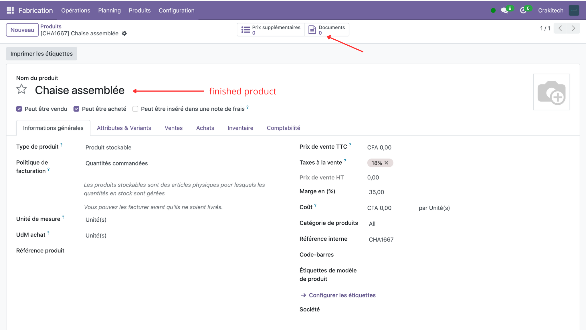

📸 Example of use
1. Before copying: the component has documents, but the finished product has nothing.


2. Create the bill of materials: select the finished product and its components.

3. After copying: the finished product automatically retrieves the component's documents.

4. Deletion: a document deleted from the component is marked [OBSOLETE] in the finished product.